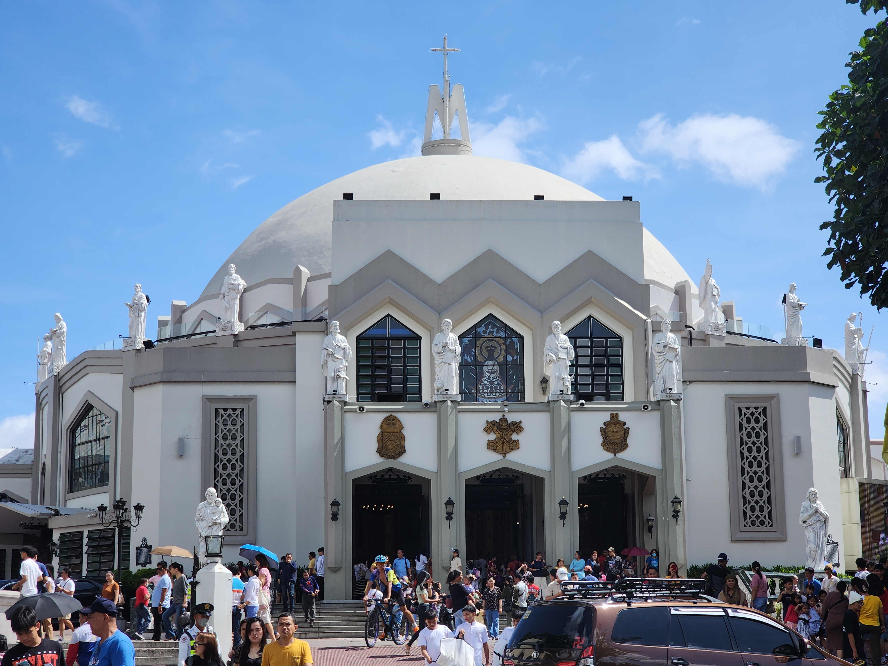
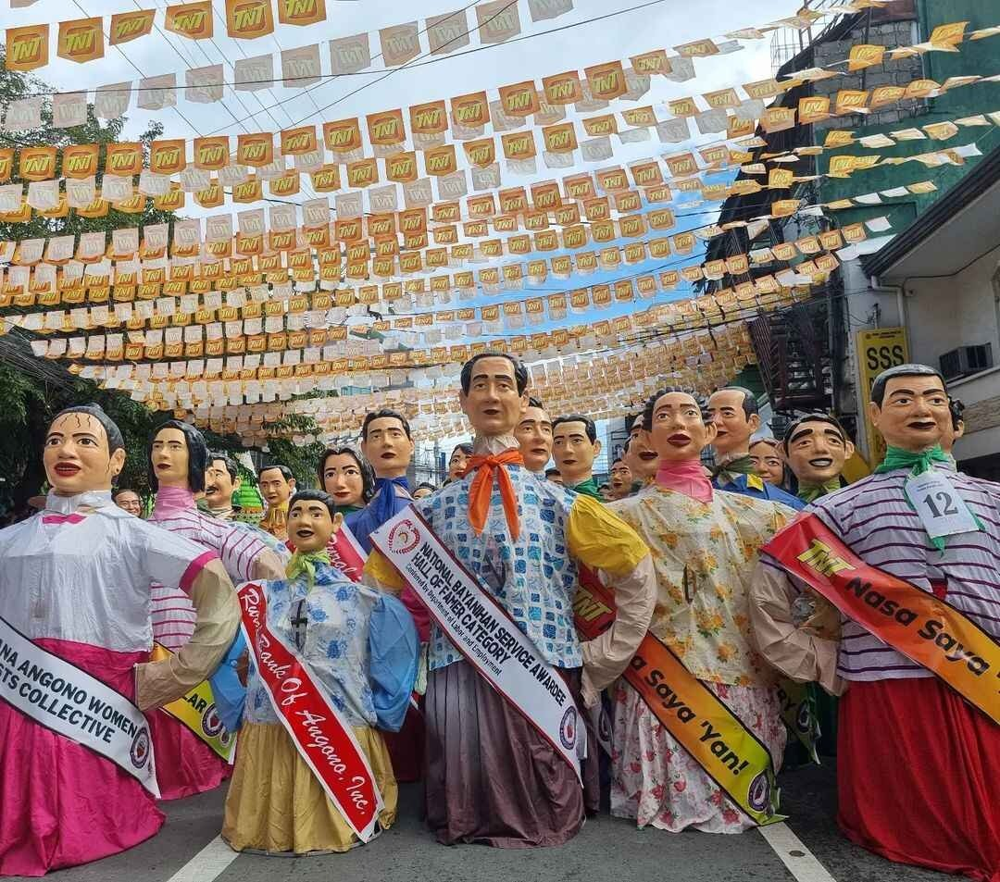

Antipolo
Pilgrimage city with scenic views and famous for Hinulugang Taktak.

Tanay
Nature lover’s dream – Daranak Falls and mountain adventures.

Angono
Art capital of the Philippines – home of Higantes Festival.

Binangonan
Visit the Rizal Petroglyphs and take in lakeside beauty.

Montalban
Fresh lakeside delicacies and peaceful provincial charm.